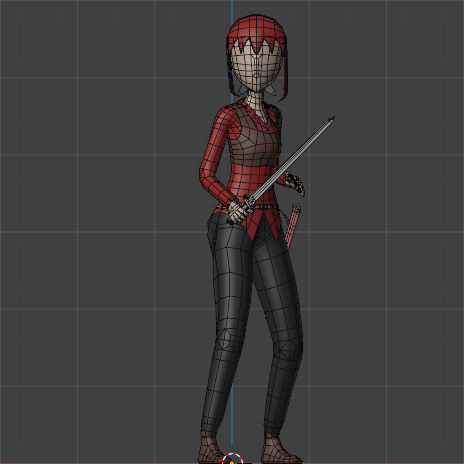

Embora os sistemas de RPG tradicionais nos proporcionem a liberdade
de conceber inúmeras aventuras e enredos complexos, o conteúdo
disponibilizado em seus livros-base, por mais vasto que seja,
inevitavelmente encontra seus limites. Foi exatamente diante dessa
limitação que surgiu a minha paixão por desenvolver e compartilhar
conteúdos personalizados e de uso livre para diversos sistemas de
RPG. Meu principal objetivo com essa iniciativa é expandir
exponencialmente as possibilidades desses universos, oferecendo aos
mestres e jogadores novas ferramentas e inspirações para suas campanhas.
Este projeto, em particular, foi cuidadosamente elaborado para
apresentar características que visam enriquecer sua experiência de
jogo de maneiras significativas. Você encontrará:
Conteúdo original e inédito: Aventuras, personagens, itens mágicos,
monstros e cenários que não estão presentes nos livros oficiais,
permitindo novas descobertas e desafios.
Compatibilidade ampla: O material é projetado para ser facilmente
adaptável a diferentes sistemas de RPG, com sugestões claras de como
implementá-lo em suas mesas, independentemente do conjunto de regras
que você utiliza.
Foco na imersão: Detalhes ricos e descrições vívidas que buscam aprofundar
a experiência narrativa, transportando os jogadores para mundos fantásticos e intrincados.
Flexibilidade e modularidade: Os elementos podem ser utilizados de forma
independente ou combinados, permitindo que você os integre às suas próprias
campanhas da maneira que melhor se adequar à sua visão.
Uso livre e colaborativo: Todo o material é disponibilizado para que a
comunidade possa utilizá-lo, adaptá-lo e, se desejar, contribuir com suas
próprias ideias e expansões, fomentando um ambiente de criatividade mútua.
Meu intuito é que este conteúdo sirva como um ponto de partida para suas próprias
criações, estimulando a imaginação e garantindo que suas sessões de RPG sejam
sempre repletas de novidade e empolgação.
Modelagem, Texturização e Animação 3D
Anos dedicados ao estudo, pesquisa e prática contínua me capacitaram a dominar
os intrincados conceitos da modelagem 3D. Essa jornada me permitiu não apenas
compreender a teoria por trás da criação de mundos virtuais, mas também desenvolver
a habilidade de preparar os mais variados tipos de modelos 3D, sejam eles estáticos
— perfeitos para cenários, objetos e ambientes detalhados — ou dinâmicos, ideais
para personagens, veículos e elementos interativos que ganham vida na tela.
Minha expertise vai além da simples construção de superfícies. Sou proficiente
em toda a estrutura esquelética da malha, conhecida como rigging, garantindo
que os modelos possuam a base necessária para movimentos orgânicos e realistas.
Consequentemente, sou capaz de produzir diversos tipos de animações 3D, desde as
mais sutis e expressivas até as mais complexas e coreografadas. O objetivo é sempre
conferir aos ativos digitais uma fluidez e uma credibilidade que os destaquem
em qualquer projeto.
Neste projeto, você terá acesso a um conjunto de recursos 3D desenvolvidos
com um rigor técnico e artístico apurado. Cada elemento foi pensado para
otimizar sua utilização e garantir a máxima qualidade:
Malha topologicamente fluida, pronta para receber animações sem grandes
distorções: Priorizei a criação de topologias limpas e eficientes.
Isso significa que as malhas são construídas de forma otimizada para
o processo de animação, minimizando artefatos e garantindo que os movimentos,
por mais intensos que sejam, ocorram de maneira suave e natural, sem
deformações indesejadas que poderiam comprometer a estética ou a funcionalidade
do modelo.
Variados tipos de animações e movimentos, desde os mais básicos aos mais
complexos: Explore uma biblioteca rica em movimentos. Desde ciclos de
caminhada e corrida, interações simples e expressões faciais, até sequências
de combate elaboradas, coreografias complexas e simulações físicas que adicionam
um alto nível de realismo. Cada animação é cuidadosamente keyframada para transmitir
peso, timing e emoção, oferecendo uma vasta gama de opções para dar vida aos
seus projetos.
Meu compromisso é fornecer ativos 3D que não apenas atendam às expectativas técnicas,
mas que também inspirem a criatividade e impulsionem a qualidade visual de suas produções.

Programação de Sistemas e Jogos
Compreender e aplicar os princípios da programação é uma paixão que
desenvolvi ao longo do tempo. Através de estudo dedicado e experiência
prática, adquiri proficiência em diversas linguagens e paradigmas,
capacitando-me a dar vida a ideias complexas através do código.
Minha jornada na programação me proporcionou um domínio sólido em
linguagens como Python, Java SE e C#. Essas ferramentas versáteis me
permitiram explorar uma ampla gama de aplicações, com destaque para
o desenvolvimento de jogos, onde pude ver meus conhecimentos
aplicados de forma dinâmica e interativa.
Além da sintaxe e das peculiaridades de cada linguagem, possuo um
entendimento aprofundado dos pilares que sustentam a construção de
softwares robustos e eficientes. Isso inclui:
Lógica de Programação: A base de todo o desenvolvimento, permitindo-me
estruturar algoritmos de forma clara e resolver problemas complexos
de maneira eficiente.
Programação Orientada a Objetos (POO): Utilizo conceitos como classes,
objetos, herança, polimorfismo e interfaces para criar códigos mais modulares,
reutilizáveis e fáceis de manter. A POO é fundamental para gerenciar
a complexidade de projetos maiores e colaborar em equipes de desenvolvimento.
Encapsulamento: Aplico rigorosamente o encapsulamento para garantir
a segurança e a integridade dos dados, controlando o acesso aos atributos
e métodos de um objeto e promovendo uma arquitetura de software mais coesa.
Neste projeto, minhas habilidades de programação são aplicadas para criar
soluções que combinam funcionalidade, performance e escalabilidade. Você
encontrará as seguintes características que refletem meu foco na qualidade
do código:
Código bem estruturado e documentado: Priorizo a clareza e a manutenibilidade
do código, utilizando boas práticas de desenvolvimento e comentários
explicativos para facilitar a compreensão e futuras modificações.
Soluções otimizadas e eficientes: Desenvolvo algoritmos e estruturas de
dados pensando na performance, buscando sempre a melhor abordagem para
que as aplicações rodem de forma fluida e responsiva, especialmente em
contextos exigentes como o de jogos.
Utilização de padrões de design: Aplico padrões de design reconhecidos
para resolver problemas comuns de forma elegante e escalável, garantindo
que o software seja flexível e adaptável a novas funcionalidades.
Foco na modularidade e reusabilidade: Crio componentes de software que
podem ser facilmente reutilizados em diferentes partes do projeto ou
em projetos futuros, economizando tempo e aumentando a consistência.
Aplicações com arquitetura robusta: Desde a concepção inicial, as
soluções são projetadas com uma arquitetura sólida, capaz de suportar
expansões e evoluções sem comprometer a estabilidade ou a performance.